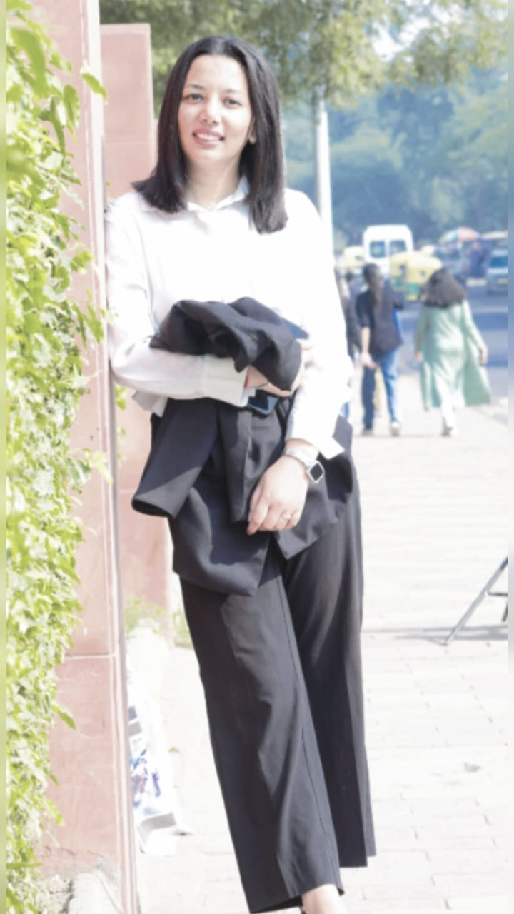

My Story
About Me — Sheetal Rawat
Hello, I’m Sheetal Rawat, a passionate writer born in the serene hills of Pithoragarh, Uttarakhand, now navigating the rhythms of life from Delhi. From a young age, words have been my constant companions. While other children played with toys, I was busy crafting my little world with pen and paper. Writing was never just a hobby — it was my way of understanding life. Over the years, my diaries filled with poems, reflections, and untold stories. One day, my sister read one of my pieces and casually said, “Tumhe apni book likhni chahiye.” That small sentence planted a seed in my heart — and that seed grew into purpose. I believe "Life is what we think" — our thoughts shape our reality, and writing is my way of nurturing those thoughts with hope, courage, and honesty. Through my stories and poems, I try to create a space where emotions are felt, dreams are rekindled, and even silence finds a voice. My journey from the tranquil hills to the bustling lanes of Delhi has taught me that even in chaos, creativity can bloom. Every street, every moment, every smile and tear — they all find their way into my words. If you're someone who believes in the power of emotions, dreams, and the written word — I hope you’ll find a piece of yourself in my stories. With ink-stained hands and a heart full of dreams,
– Sheetal Rawat
